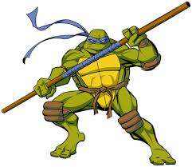
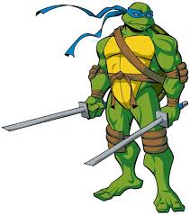
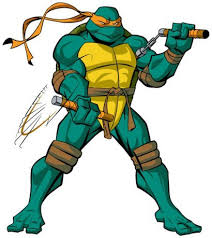
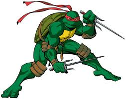
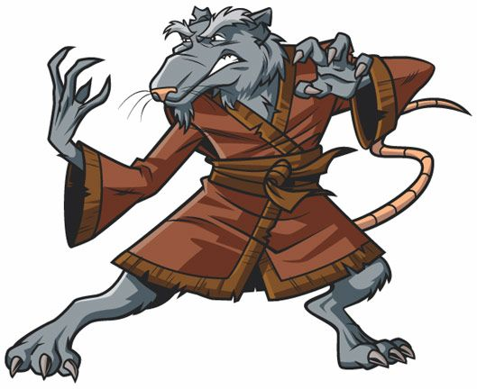

El genio tecnológico del grupo. Experto en ciencia e inventos, pelea con un bastón bo.

Líder del equipo, disciplinado y estratégico. Usa dos katanas y siempre busca hacer lo correcto.

El más divertido y relajado. Amante de la pizza, usa nunchakus y aporta el humor del equipo.

El más fuerte y temperamental. Valiente e impulsivo, combate con dos sais.
Cada Tortuga Ninja tiene su arma especial:
"Las Tortugas Ninja salvaron la ciudad otra vez!"
- April O'Neil

Splinter es una rata mutante experta en artes marciales que entrenó a las tortugas.
Email:tortugas@ninja.com
Instagram: @tmnt